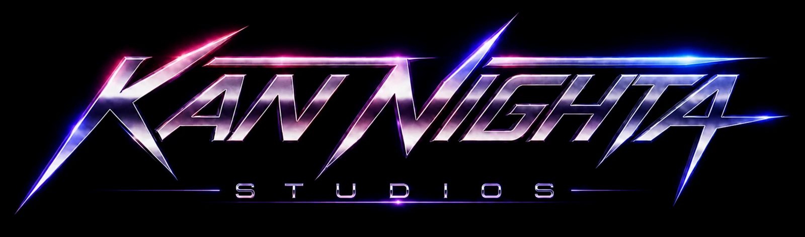

Real-time 3D · in a browser tab

Five worlds that run in a browser tab with nothing to install — a Caribbean treasure hunt, a Swedish archipelago rebuilt from real-world geographic data, a shooter whose every texture is generated in code, a synthwave arcade grid, and a ski simulation of a real alpine domain.
Scroll